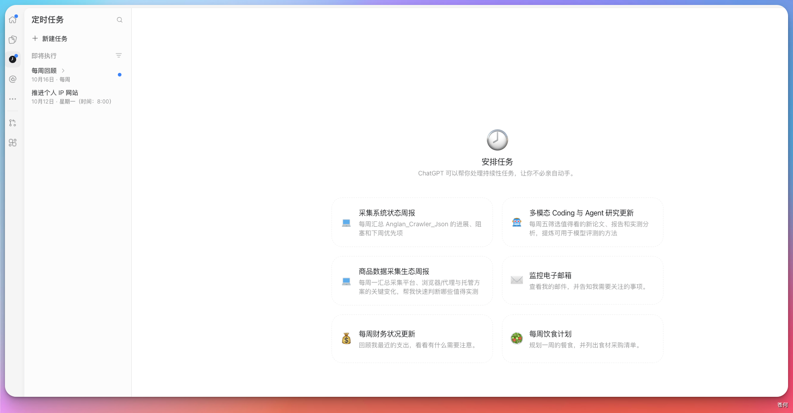
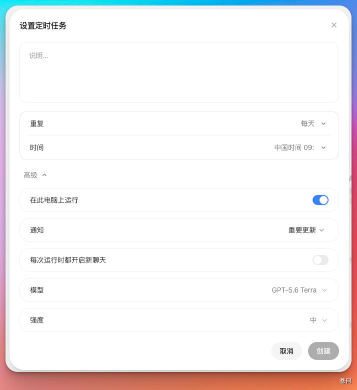

计划任务可以让 ChatGPT 或 Codex 在指定时间自动开始工作，也可以在收到邮件、Slack 消息或 GitHub PR 更新时触发。适合用它处理那些流程已经稳定、需要反复执行的工作。
Skill 和计划任务的职责不同：Skill 定义“怎么做”，计划任务决定“什么时候做”。对于成熟的重复流程，可以先把操作方法写成 Skill，再交给计划任务定时或按事件运行。
适合交给计划任务的工作包括：
- 定期检查文档死链
- 每周整理一次 issue 或 PR 摘要
- 每天汇总 failing CI
- 持续跟进耗时较长的部署、测试或研究任务
- 收到特定邮件、Slack 消息或 GitHub PR 更新后自动处理

触发方式#
“触发”就是“什么时候开始执行任务”。计划任务有两种触发方式：
按时间运行 到了你设定的时间，任务就会自动开始。例如：每天早上 9 点检查项目，或者每周五整理一次工作周报。
在桌面端中，打开“设置定时任务”窗口，选择“重复”和“时间”即可。需要更复杂的执行时间时，再使用高级设置。

按应用事件运行 当某个应用里出现指定的变化时，任务会自动开始。例如：收到某个客户的邮件后生成摘要，或者 GitHub 上的 PR 出现新评论后给出处理建议。
这种任务不是在上面的“设置定时任务”窗口中创建的。需要打开 ChatGPT Web 或移动端，先连接 Gmail、Slack 或 GitHub，然后在聊天中直接告诉 ChatGPT 你想监听什么、发生后要做什么。
例如，可以输入：
当 GitHub 仓库中的 PR 出现新评论时，检查评论内容，并给我一份处理建议。如果看不到这项功能，可能是当前套餐暂不支持、应用还没有连接，或者工作区管理员关闭了事件触发权限。
独立任务与聊天内任务#
创建任务前，需要先决定它是否要继续使用当前聊天的上下文。
- 独立计划任务：每次执行都会开始一个新聊天，并从保存好的 prompt 开始工作。运行结果会集中显示在
Scheduled中。它适合彼此独立的周期检查，也可以同时用于多个项目。 - 聊天内计划任务：触发后会回到当前聊天，继续使用已有的上下文。它更适合持续跟进耗时操作、研究进展或复查循环。
独立任务不会继承前一次运行的对话，因此 prompt 要尽量写完整。聊天内任务虽然拥有上下文，也应说明每次要做什么、哪些情况需要报告，以及何时应该停止或请求人工处理。
客户端和本地项目#
计划任务在不同入口中的能力并不完全相同：
- 在 ChatGPT Web 和桌面端中，可以创建计划任务，并在
Scheduled中查看状态和运行结果。 - Codex CLI 和 IDE 扩展没有
Scheduled管理界面。可以用它们提前调试 prompt、Skill 或脚本，然后再到 Web 或桌面端创建任务。 - Web 端任务可以使用上传的文件、已连接的工具、Skills 和 Plugins，但无法直接访问电脑上的本地目录。
- 桌面端任务可以在本地项目中运行。到了执行时间，电脑需要保持开机，ChatGPT 桌面应用也需要保持运行，而且项目仍然必须存在于原来的磁盘位置。
- 对于 Git 仓库，可以直接在当前项目中运行，也可以新建独立 worktree。如果任务会修改文件，使用 worktree 可以避免干扰正在进行的开发工作。如果项目没有使用版本控制，任务会直接在项目目录中运行。
常见使用流程#
- 决定是创建独立任务，还是让任务继续当前聊天。
- 如果要操作本地项目，选择相应的项目。任务会修改 Git 仓库时，优先考虑使用 worktree。
- 设置运行时间和频率，或选择要监听的应用事件。
- 写清任务目标、检查范围、输出格式、验证方法、停止条件和权限边界。
- 创建前，先在普通聊天中手动执行一次，确认模型、推理强度、工具和输出都符合预期。
- 任务开始定期运行后，仔细检查前几次结果，再根据实际情况调整 prompt、工具、模型或运行频率。
编写可维护的 prompt#
下面是一个独立死链检查任务的示例。
❌ 不够自包含的写法：
请检查一下文档里的链接有没有问题。✅ 推荐的写法：
请检查 docs/ 目录下所有 .md 文件中的外部链接。
检查范围：仅检查以 http:// 或 https:// 开头的链接，忽略锚点和相对路径。
验证方式：先请求 HEAD；如果站点不支持 HEAD，或返回 403、405 等不能证明链接失效的结果，再使用受限 GET 复核。
结果分类：明确不存在的链接标记为“失效”；超时、403 或临时服务错误标记为“待人工复核”。
输出格式：按“文件路径 | 行号 | 链接 | 状态 | 证据”列出问题；全部正常时输出“全部链接正常”。
限制：不修改任何文件，不创建新文件。如果这套流程会长期重复使用，可以把稳定的操作规则整理成 Skill，再在任务 prompt 中调用它。在桌面端中，可以用 $skill-name 指定要使用的 Skill。
权限与安全#
计划任务通常在无人值守时运行，因此权限设置比普通对话更需要谨慎。它会使用默认的 sandbox 设置：
- 只授予完成任务所必需的最小权限。只有在确实需要时，才开放网络访问或更广的文件写入权限。
- 刚开始时，优先选择低风险的只读任务。如果任务会修改文件、执行命令、访问网络或操作外部系统，应保留清晰、可复核的运行结果。
- 在
full access模式下，后台任务可能会修改文件、运行命令并访问网络，不建议把它作为默认选择。 - 如果组织策略允许，计划任务会使用
approval_policy = "never"。管理员可以限制可用的权限模式，也可以禁止这项设置。 - 如果计划任务所用的模型已经退役，需要及时改用当前可用的模型。
如果高频 Git 任务每次都使用 worktree，时间长了可能会积累许多 worktree。建议定期归档不再需要的运行记录，只保留真正需要长期留存的结果。
下一步#
下一步：Hooks。